석수시장프로젝트 open the door!
2005.05.14. - 06.15.
[KIN-아이지트] 놀이방 오픈프로젝트
아이(나이가 어린 사람 / 마음에 차지 않을 때 하는 말) + 지트(쓸모없는 사람)
* 아지트(혁명운동과 기존 권력 간의 대항관계에서 활동가가 잠복하는 은신처)
= 아이지트(석수시장 프로젝트에 참여하는 현미발모의 21c AGP 3.2 타이틀)
KIN즐(초등학생이 쓴 게임 채팅어, 상대방을 무시할 때 쓴 부정적 의미와 즐과 함께 단어를 쓰면 즐겁게란 뜻)
참여자
Feel so good _ 신정필 | nada _ 최진성 | 야시 _ 이지연 | 직지 _ 이명훈
쑤기쑤기 _ 신주숙 | 미류(미러유) _ 박동수 | 두눈을부릅뜬자 _ 변득수
석수 시장 내의 버림받은 빈 상점
원래 이 공간은 누군가에 의해 가꾸어져 살아 있는 공간이었을 것이다. 거대 자본에 밀려 혹은 다른 삶의 선택으로 석수 시장을 떠난 후 이곳은 필요없는 물건들을 넣어둔창고였다. 현미발모가 2년 4개월 전 처음으로 석수시장을 방문 했을 때 보다 빈 상점들이 더 많이 눈에 뛰었다. 쓸모없이 방치된 공간은 스톤앤워터 2005석수 시장프로젝트기간에는 주변 상인들의 배려와 현미발모의 실천에의해 아이들을 위한 “아이지트”로 다시 태어난다.
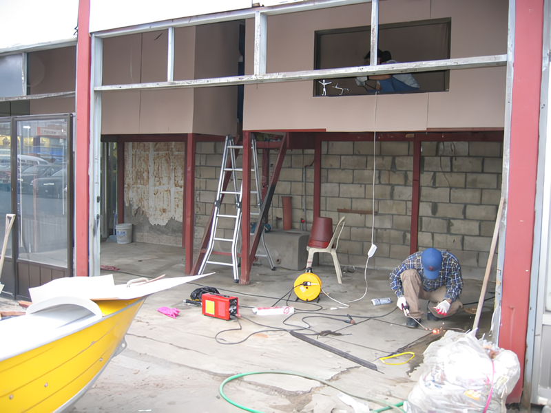 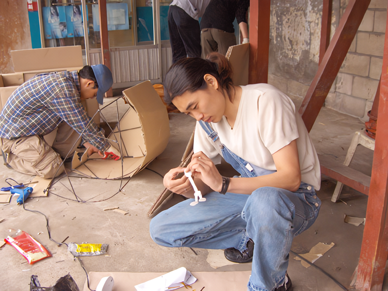 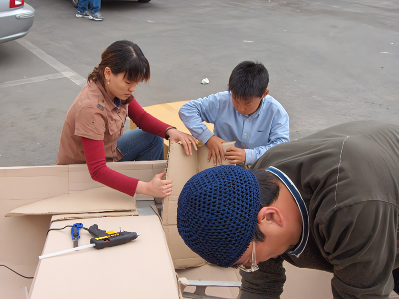 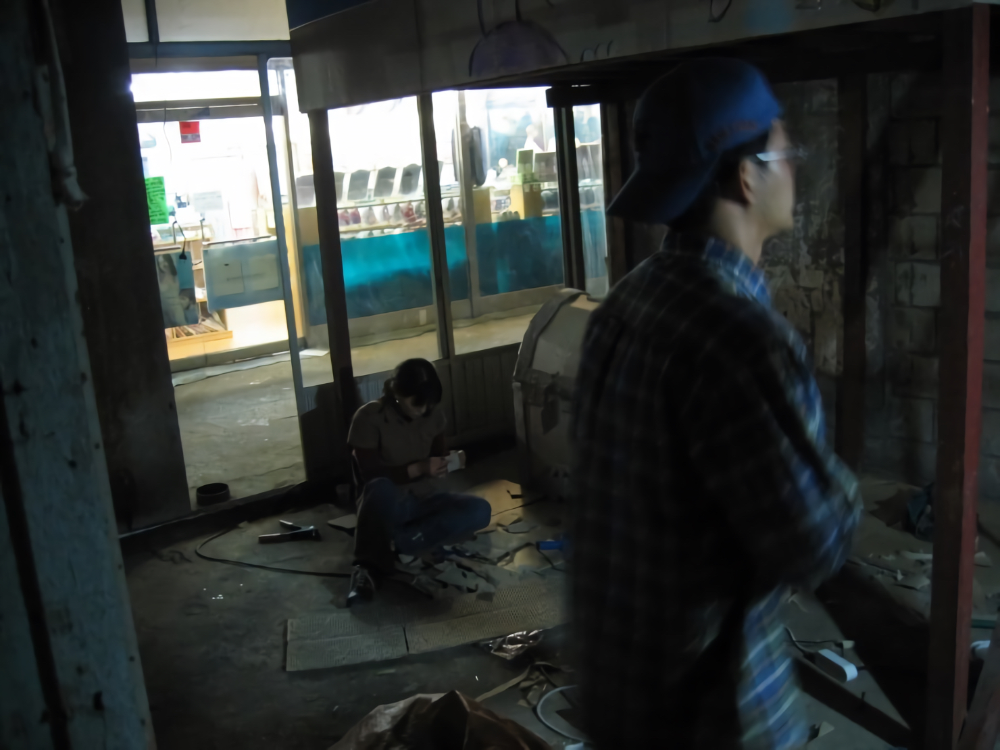 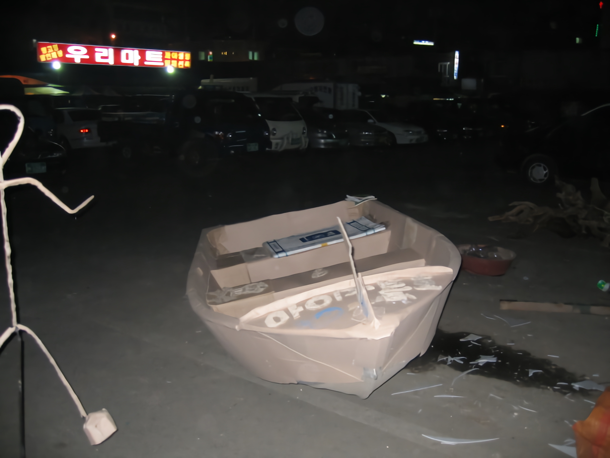
동네 아이들의 위안처이자 놀이 공간으로
아이들에겐 현실의 돌파구 즉 불만 요소들을 풀 것들이 필요하다. 콩쥐팥쥐전, 장화홍련전, 김인향전 등이 “아이지트”와 유사한 개념이라고 할 수 있다. 이작업 개념의 첫 출발은 김영하소설가의 강의를 듣고서이다. 이런 유의소설에 대해 찾아 보니 “계모형 소설”이라고 한다. 이런 소설은 전 세계적으로 동화책으로 만들어 졌으며 아이들이 많이 읽는 책이다. 아이들은 어머니의 기분에 따라 돌변하는 행동에 당황해 하며 화가 많이 나있을 때는 나의 어머니가 아니다! 라는 생각을 한다는 것이다. 어릴 때 많이 들었던 다리 밑에서 주워 왔다는 말을 믿으며 어머니를 계모라 생각하고 지금 보다 더 좋은 친 어머니가 따로 있을 거라는 생각을 하며 위안을 얻는다고 한다. 즉 계모형 동화책을 읽으며 어린 시절을 참고 견디는 것이다.
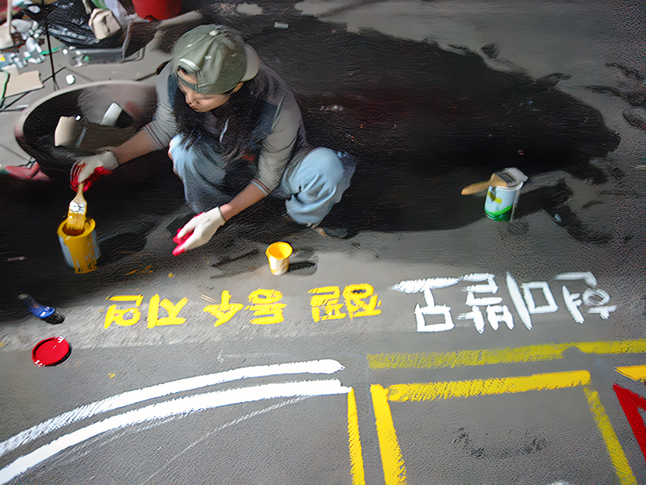 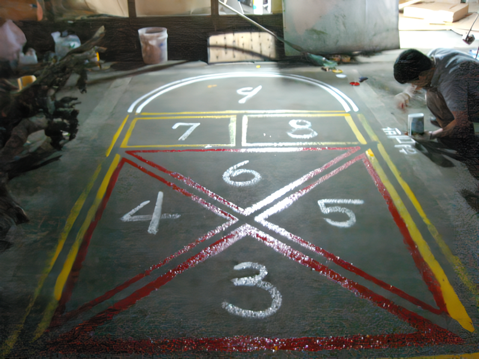
마찬가지로 “아이지트” 또한 처해 있는 상황/현실이 마음에 차지 않는 아이들을 위해 공간을 만들어 아이들이 놀 수 있도록 꾸미며 직접 아지트를 꾸밀 수 있는 장치를 마련 해둔다. 이곳에서 쓸모없는 짓을 하는 것이 아니라 아이들은 꿈을 꾸며 상상 할 수 있는 공간이 되며 희망과 용기를 줄 수 있는 공간이 되었음 하는 것이 “아이지트” 의 목적이다. 또한 본 작업의 개념은 현미발모의 목적과도 부합되는 것이다.
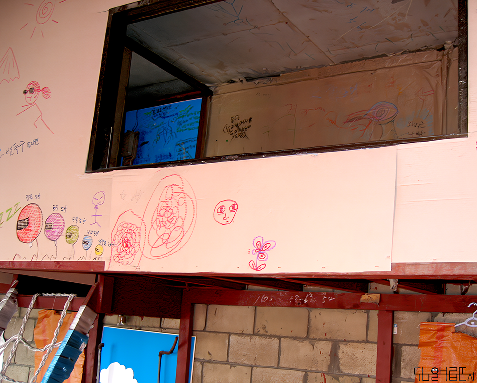 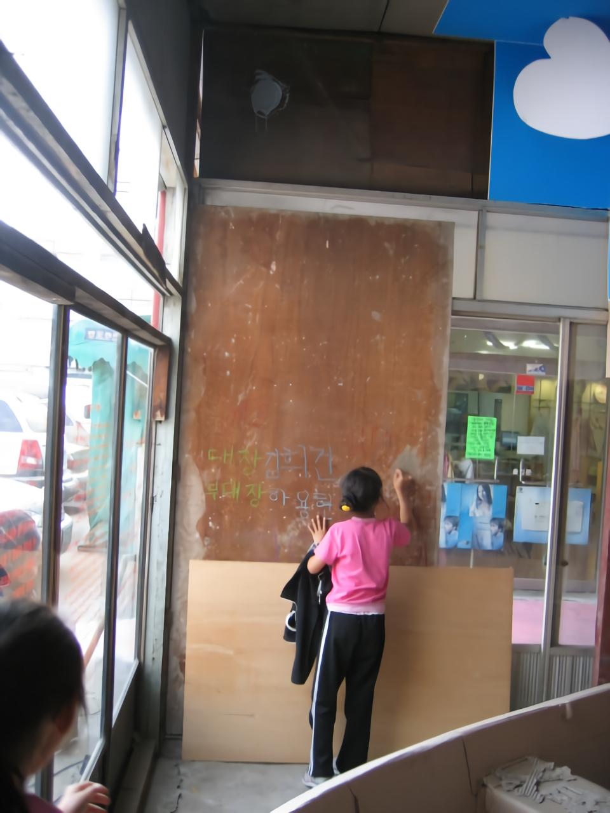 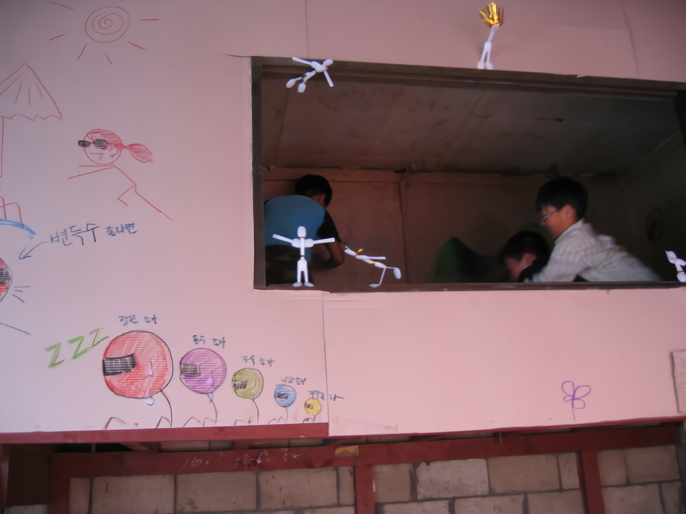 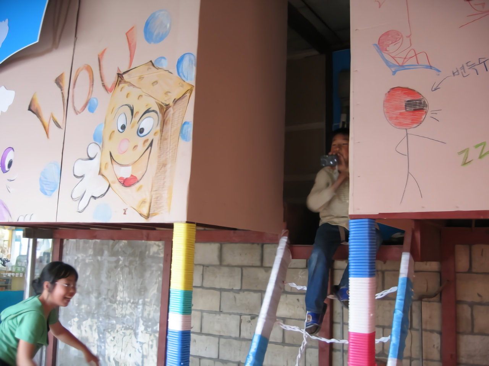 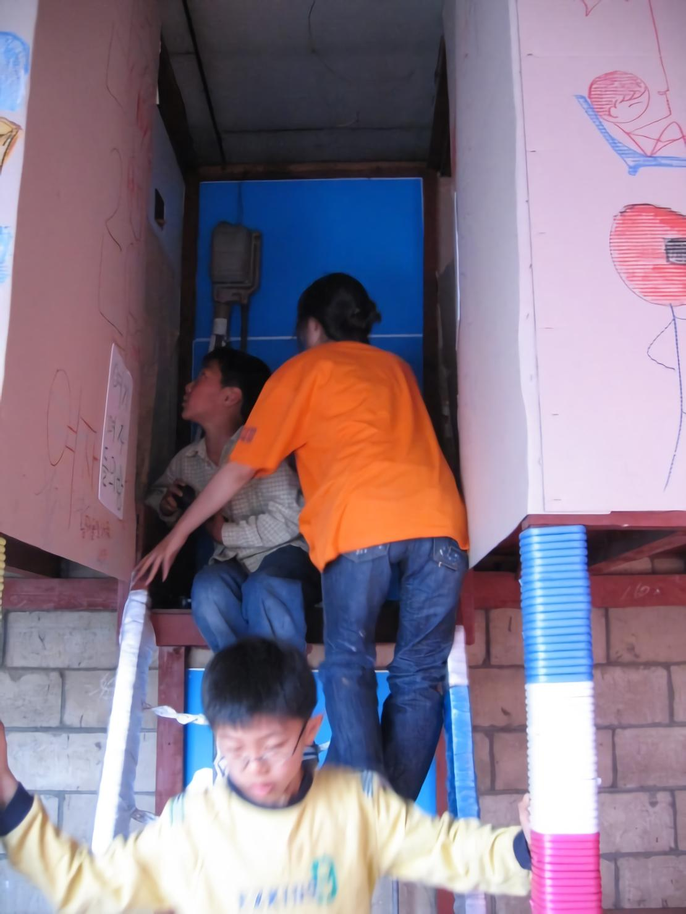 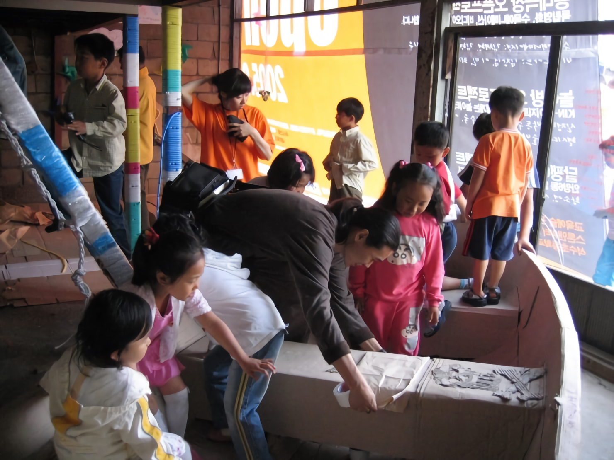
무모한 짓을 하는 현미발모
2003년 1월 스톤앤워터 전시지원에 선정 되어 9개월간 준비해 한 달여 동안 21c AGP 그 두 번째실천 <생경-익숙하게 낮선 풍경>전을 석수시장에서 개최 한 바 있는데 미술세계 2003년 9월호에서 김윤정 기자는 생경한 미술과의 유쾌한 만남이란 타이틀로 이색전시 리뷰에 "지금도 미술계 곳곳에서 목소리 높여 외치는 ‘지역미술의 발전, 그리고 미술의 대중화는 그 뚜렷한 발전 상황을 가늠할 수 없듯, 쉬운 목표가 아니기에 이들의 움직임은 자칫 무모해 보일 수 있다. 하지만 이러한 무모한 도전을 실천하고 있는 ‘생각 있는 젊은이들’의 모습이 필요한 것이기도 하다.” 라고 평한 것이 떠오른다.
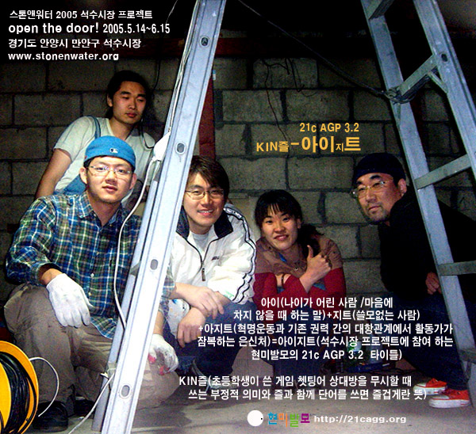
2004년에 부산의 프라임병원에서 21c AGP 그 세 번째 실천 <미술종합병원-즐거운 치유>전을 개최하고 약 2년 4개월 만에 다시 석수시장을 찾게 되었다. 현미발모는 이처럼 무모한 짓을 꾸준히 해나갈 것이다. 현미발모는 생각이 젊은 미술인들의 아지트가 되었음 한다.
무모하지만 “의미있는 짓”을 할 젊은 미술가들이여 함께 나아가자!
현시대미술발전모임(21c Art Growth Group)